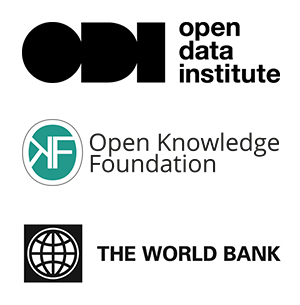

 ###How can open data enhance global development? In 2014, The World Bank joined forces with the Open Data Institute and Open Knowledge in a project designed to help policy-makers, NGOs and citizens in developing countries to understand and harness the benefits of open data.
As part of the project, we produced several technical reports, white papers and case studies:
Supporting sustainable development
There are many aspects of global development that can be made more effective with the application of open data. Supporting sustainable development with open data recommends ways that governments, donors and the international community can use open data to help make the Sustainable Development Goals a reality.
How to prioritise open data
We have developed a tool for how to prioritise open data to drive global development across six sectors: education, health, transportation, environment, sanitation and waste, and governance. For each sector, we map out relevant datasets and examples of real-world open data application and tools. We then offer a starting point and a menu of options to help decision- and policy-makers choose datasets to release as open data.
Promoting organisational change
Many governments are realising the potential value of open data, but bringing about organisational change to make open data sustainable is often challenging. To help governments prepare for transition, we launched a white paper that sets out recommendations for open data in government: how to bring about change.
Benchmarking open data
As open data becomes more widespread and useful, so does the need for effective ways to analyse it. Benchmarking open data automatically explores individual dimensions of open data research, and assesses how feasible it would be to conduct automated assessments of them.
Case studies
Detailed case studies drill into how open data has been applied in Mexico, Macedonia and Moldova, highlighting what worked well and what the challenges were. Another covers how global health watchdog Aidspan uses open data to keep track of Global Fund health spending.
Technical assistance
We provided technical assistance and mentoring in Burkina Faso, Mexico and Botswana, helping governments to launch their own open data initiatives and harness the benefits of open data more broadly.
To understand more about our work, watch these talks from the 2014 ODI Summit, by Liz Carolan, International Development Manager, and Alfred M. Sawadogo, Director-General of Burkina Faso's National Agency for ICT Promotion.
You can find more information in our FAQs.